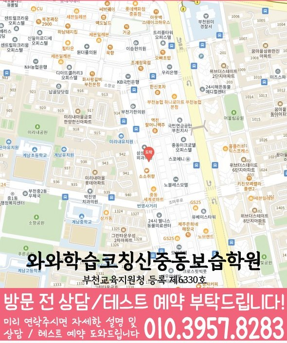

MIDDLE ENGLISH
심곡동 중등 영어학원
심곡동 중등 영어학원의 단어 기록과 학습 루틴을 함께 점검하는 방법, 문맥 어휘와 복습·과제 루틴을 확인하는 기준과 학교 시험 준비 순서, 센터·학년 정보를 정리했습니다.
01 Quick answer
심곡동 중등 영어: 단어 기록과 학습 루틴을 함께 점검하는 방법
심곡동에서 ‘단어 기록과 학습 루틴을 함께 점검하는 방법’을 판단할 때는 제목의 표현을 실제 학생 기록으로 바꾸어 봐야 합니다. 확인할 흔적: 계획표의 분량과 실제 완료 기록을 대조해 시작하지 못한 날과 끝내지 못한 날을 구분하세요. 적용할 계획: 매일 지킬 최소 행동 하나와 미완료 때 줄일 분량을 정하고 완료 근거를 한 줄로 남기세요. 변화 판단: 일주일 뒤 반복 오답과 미완료 이유를 보고 시간·분량·점검 순서 중 한 가지만 조정하세요. 두 기록이 달라진 이유를 적으면 문맥 어휘와 복습·과제 루틴을 함께 할지 순서를 나눌지 판단할 수 있습니다.
확인 기준
심곡동 학습 메모에서는 문맥 어휘의 확인 기록과 복습·과제 루틴의 다음 행동을 먼저 확인합니다.


010-6839-8283학습 답변 요약
핵심 주제는 ‘단어 기록과 학습 루틴을 함께 점검하는 방법’입니다. 문맥 어휘와 복습·과제 루틴의 현재선을 확인하고 학습 우선순위와 근거 독해를 확인한 기록과 학교·센터 사실을 분리해 살펴봅니다.
심곡동 중등 영어 첫 진단: 단어 기록과 학습 루틴을 함께 점검하는 방법
심곡동 학생의 출발점을 정하는 질문은 ‘단어 기록과 학습 루틴을 함께 점검하는 방법’입니다. 먼저 ‘외운 단어를 교과서와 새 지문에서 만났을 때 품사와 문맥 의미를 바로 떠올리는지’에 학생이 직접 답하게 하고 풀이 기록과 맞는지 봅니다.
이어 ‘계획한 영어 학습이 실제 완료 기록과 오답 재확인으로 이어지는지’도 별도 질문으로 남기고 답변과 풀이 흔적이 어긋난 지점을 찾아 문맥 어휘와 복습·과제 루틴의 순서를 현실적으로 정하세요. 심곡동의 ‘단어 기록과 학습 루틴을 함께 점검하는 방법’은 단어 뜻만 적지 않고 품사·문장 속 의미·함께 쓰인 표현을 묶어 기록한 뒤 다른 지문에서 다시 찾는 방식으로 확인합니다. 첫 기록에서 기준선을 표시하고 다음 점검일을 정하세요.
진단에 필요한 문맥 어휘와 복습·과제 루틴 기록
‘단어 시험 결과와 같은 단어가 나온 지문에서 멈춘 위치’가 남아 있는 자료를 먼저 보고 ‘주간 계획표, 시작·완료 시각과 다음 날 남은 질문’을 다른 색으로 표시해 정답보다 판단이 바뀐 위치를 기록하세요.
첫 기록과 재풀이 기록을 비교할 때는 ‘처음 보는 문장에서도 해당 어휘의 의미를 근거와 함께 설명하는지’에 답한 근거와 ‘한 주 뒤 미완료 이유와 반복 오답을 바탕으로 분량을 조정하는지’의 변화를 함께 봅니다. 그 차이로 계속 보완할 부분을 판단하세요.
학교 시험과 처음 보는 지문의 문맥 어휘와 복습·과제 루틴 계획
학교 자료의 마감일과 다음 점검 날짜를 분리한 뒤 문맥 어휘와 복습·과제 루틴을 확인하는 최소 행동을 각 일정에 맞게 배치하세요.
내신 마감일과 누적 독해 재확인일을 달력에 따로 표시하고 두 일정마다 문맥 어휘와 복습·과제 루틴의 최소 분량을 적으세요. 한쪽이 밀리면 다음 주 비중을 조정합니다.
‘단어 기록과 학습 루틴을 함께 점검하는 방법’을 시험 주간에 적용할 때는 문맥 어휘 점검일과 복습·과제 루틴 재확인일을 다른 줄에 적으세요. 점수 확인이 끝나면 문맥 어휘와 복습·과제 루틴의 기록을 대조하고 독립 설명이 끊긴 영역의 분량만 조정하세요.
문맥 어휘 질문과 분리해 확인할 심곡동 학교·학년 정보
제공된 학교 목록에는 심원중·계남중·부곡중 등이 포함돼 있으나, 학교별 진도와 자료 반영 방식은 목록이 아니라 상담 시점의 답변으로 판단해야 합니다.
영어 가능 학년 항목에서 중1·중2·중3 표기를 확인할 수 있어 학습 우선순위와 근거 독해를 어느 학년에 적용하는지는 현재 개설 범위와 함께 물어보세요. 이 페이지에 연결된 센터는 와와학습코칭센터 신중동점이며 제공 주소는 경기 부천시 원미구 조마루로291번길 25 센터프라자 405호, 406호입니다. 와와학습코칭센터 신중동점 이용 조건을 비교할 때는 교습비 자료의 기준과 현재 시간표가 같은 시점의 정보인지 확인합니다.
문맥 어휘에서 복습·과제 루틴으로 이어지는 7일 영어 계획
주간 계획표 첫 줄에 ‘단어 시험 결과와 같은 단어가 나온 지문에서 멈춘 위치’를 적습니다. 이후 ‘뜻·품사·문장 속 쓰임을 한 묶음으로 적고 다음 날 예문에서 다시 찾기’를 실행하고 실제로 끝낸 날짜와 수정한 이유를 기록하세요.
다음 점검 질문은 ‘처음 보는 문장에서도 해당 어휘의 의미를 근거와 함께 설명하는지’입니다. 답이 불분명하면 ‘뜻·품사·문장 속 쓰임을 한 묶음으로 적고 다음 날 예문에서 다시 찾기’의 설명 단계를 보완하고, 분명하면 ‘매일 할 최소 분량과 다시 볼 항목을 나누고 완료 근거를 한 줄로 남기기’를 다음 주 행동으로 정합니다. ‘단어 기록과 학습 루틴을 함께 점검하는 방법’의 다음 날 예문과 일주일 뒤 새 지문 기록을 비교해 같은 단어의 문맥 근거를 말할 수 있는지 확인하세요.
복습·과제 루틴 재확인 질문과 센터 이용 조건을 나누는 방법
최근 시험지 한 장과 현재 교재를 준비하세요. 첫 질문은 ‘암기량이 아니라 지문 안에서 다시 알아보는 비율을 어떻게 확인하는지’, 두 번째는 ‘과제량보다 완료·재확인·계획 수정의 피드백 주기를 어떻게 확인하는지’입니다.
상담 메모에는 문맥 어휘의 실행 항목과 복습·과제 루틴의 확인일이 남아야 합니다. 센터 이용 조건은 별도 목록으로 구분하세요.
- 학생 자료단어 시험 결과와 같은 단어가 나온 지문에서 멈춘 위치
- 시험 계획학교 범위표와 복습·과제 실행 완료일·재확인일
- 재확인학습 우선순위 확인 날짜와 학생 설명 기록
- 이용 조건영어 가능 학년(중1·중2·중3)·시간표·교습비·통학 동선
02 Parent perspective
심곡동 중등 영어 학부모 상담 상황
아래 심곡동 중등 영어 상담 장면은 실제 이용 후기나 특정 학생의 성과가 아닌 준비용 가상 예시입니다. 학습 결과는 학생의 출발점과 실천 정도에 따라 달라질 수 있습니다.
심곡동 학생이 새 교재를 시작하기 전 상담하는 가상 장면입니다. ‘단어 기록과 학습 루틴을 함께 점검하는 방법’에 필요한 문맥 어휘 자료를 보여 주고 복습·과제 루틴을 언제 다시 볼지 질문합니다.
심곡동 학부모가 센터 답변을 학생 계획으로 옮기는 가상 상황입니다. 영어 가능 학년(중1·중2·중3)과 실제 시간표를 확인하고 학습 우선순위의 첫 행동과 근거 독해의 확인일을 정합니다.
03 FAQ
심곡동 중등 영어 자주 묻는 질문
학생 자료, 가능 학년과 실제 이용 조건을 나누어 답했습니다.
심곡동 중등 영어에서 ‘단어 기록과 학습 루틴을 함께 점검하는 방법’은 어떤 자료부터 확인하나요?
최근 자료에서 ‘단어 시험 결과와 같은 단어가 나온 지문에서 멈춘 위치’를 표시하고 ‘처음 보는 문장에서도 해당 어휘의 의미를 근거와 함께 설명하는지’를 다음 점검 질문으로 씁니다. 그 답을 확인한 뒤 ‘뜻·품사·문장 속 쓰임을 한 묶음으로 적고 다음 날 예문에서 다시 찾기’를 첫 실행 항목으로 정하세요.
문맥 어휘와 복습·과제 루틴 진단 기록은 어떻게 나누나요?
‘단어 시험 결과와 같은 단어가 나온 지문에서 멈춘 위치’와 ‘주간 계획표, 시작·완료 시각과 다음 날 남은 질문’을 다른 칸에 적고 같은 날짜에 비교하세요. 각 기록에는 다시 설명한 날짜와 도움 없이 수행했는지를 남깁니다.
학교 시험과 누적 독해에서 문맥 어휘와 복습·과제 루틴 비중은 어떻게 나누나요?
내신은 범위 자료와 마감일을, 누적 독해는 새 지문과 재확인일을 중심으로 기록합니다. 두 기록 모두 ‘학교 본문 어휘와 평소 독해에서 다시 만난 표현을 연결해 누적하는 기준’과 ‘시험 기간의 집중 과제와 평소 누적 학습을 달력에서 분리하는 기준’을 확인 기준으로 사용하세요.
상담 전 학습 우선순위와 근거 독해를 확인하려면 어떤 자료를 가져가나요?
학습 우선순위는 ‘최근 시험지와 교재에서 학생 설명이 멈춘 위치, 다시 풀며 바꾼 근거’, 근거 독해는 ‘문단별 핵심 문장, 연결어 표시와 선택지를 지운 이유’가 남은 최근 자료로 확인하세요. 이어 ‘정답 수가 아니라 근거 문장을 찾는 과정을 어떻게 기록하는지’를 묻고 확인일을 정합니다.
심곡동 중등 영어 상담에서 가능 학년과 참고 학교는 어떻게 확인하나요?
제공 자료에 적힌 심곡동 영어 학년 범위는 중1·중2·중3입니다. 다만 현재 열려 있는 반과 수업 시간은 별도 확인 항목입니다. 확인 가능한 참고 학교는 심원중·계남중·부곡중 등입니다. 이 명칭과 실제 운영 범위는 다를 수 있으므로 시험 범위표를 가져가 반영 방식을 확인하세요.
04 Related
심곡동 관련 학원·상담 페이지
같은 지역의 과목 조합과 학년 카테고리, 앞뒤 지역 안내를 함께 확인하세요.